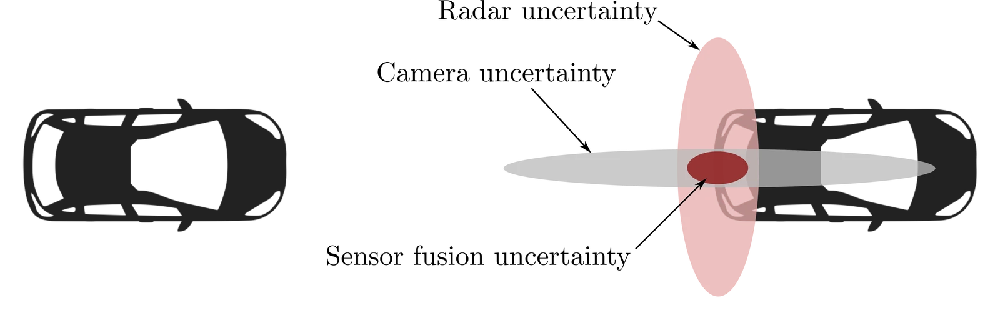

传感器融合与目标跟踪
单个传感器在测量范围、视场角（field of view）以及分辨率或量化方面都存在固有的硬性限制。在这些设计局限之外，其性能还往往会在特定环境条件下发生退化注17. Liggins II, Martin, Hall, David, Llinas, James. Handbook of multisensor data fusion: theory and practice. CRC press, 2017. Thrun, S., Burgard, W., Fox, D. Probabilistic Robotics. MIT Press, 2005.。在实际应用中，传感器还会老化并偶尔发生故障：标定漂移、偏差增大，有时设备甚至会彻底失效。传感器融合（sensor fusion）的目标在于设计出对单个传感器缺陷保持鲁棒的机器人系统，通过组合多种通常是异构的传感器，使其信息共同降低感知与定位任务中的不确定性注18. Gustafsson, F. Statistical Sensor Fusion. Studentlitteratur, 2013. Simon, D. Optimal State Estimation: Kalman, , and Nonlinear Approaches. John Wiley & Sons, 2006.。
为什么需要融合
在真实系统中，推动采用传感器融合的有三种反复出现的模式：
- 1.
互补性（Complementarity）：不同的传感模态观测世界的不同方面（例如几何结构或外观表象），将它们结合起来可以减少歧义性。
- 2.
冗余性（Redundancy）：观测同一潜在物理量的多个传感器，可以通过一致性检验与交叉验证来抵御噪声尖刺和数据缺失。
- 3.
协同性（Cooperation）：两个较弱的线索结合在一起可以构成一个强线索，例如将单目视觉与 IMU 结合以恢复米制尺度。
在更高层次上，传感器融合将每个传感器的输出视为对潜在状态的概率观测，然后将这些观测结合起来，获得比任何单一数据源都更清晰、更可靠的后验信度。
自动驾驶汽车通常结合使用激光雷达与雷达进行测距。激光雷达在中短距离提供高分辨率的几何结构信息，而雷达在更远距离以及恶劣天气下更为鲁棒注19. Samuel Blackman, Robert Popoli. Design and Analysis of Modern Tracking Systems. Artech House, 1999.注在雾、雨、雪天气中，雷达通常也比激光雷达更鲁棒。。相机对测距传感器形成互补：它们为目标识别和语义理解提供高空间密度和丰富的外观线索，并为路标与障碍物提供精确的方位信息。
图 15.1 在二维平面上展示了这一思想。雷达测量通常具有很高的纵向（距离）精度，但横向分辨率较弱；相比之下，相机能提供精确的横向方位角，但绝对深度估计较差。融合两者可以得到纵向和横向都精确的位置估计。

轮式机器人可以结合使用 GNSS 与轮式编码器来估计位置。GNSS 能保证全局位置误差有界，而编码器则提供高帧率、细粒度的短期运动增量。当 GNSS 退化或丢失时（例如在城市峡谷或树荫遮挡下），编码器里程计可以填补空白。反之，当车轮打滑破坏了里程计精度时，GNSS 可以将漂移拉回正轨。正如我们将看到的，以概率视角处理这些数据源，使得滤波器能够在任何时刻自动降低对相对不可靠数据源的权重。
空中机器人通常将高帧率 IMU 与气压计和视觉进行融合。IMU 稳定姿态和短期运动，视觉约束漂移并提供尺度，气压计则锚定高度。移动操作臂将关节编码器与深度感知相结合，在精确定位末端执行器的同时保持对周围环境的态势感知。在所有这些场景中，没有任何单一传感器能够在所有运行工况下完全满足需求，但经过精心工程设计的组合却可以做到。
我们将采用概率视角来研究融合问题。设 表示潜在状态， 表示来自所有传感器的测量集合。在适当假设下，融合过程由后验信度描述：
我们将利用卡尔曼滤波族及其非线性和分布式变体来实现这一计算。同样的视角也支撑着现代基于学习的系统，在这些系统中我们通常融合中间特征而非原始测量。
在本章中，我们首先介绍融合模式与架构的分类体系，然后利用线性和非线性滤波器展开贝叶斯融合，包括偏差感知建模以及针对未知相关性的保守融合策略。我们讨论实际工程问题，如空间配准、时间对齐、多速率/异步更新以及乱序测量。接着，我们将融合与目标跟踪联系起来，涵盖门限判定、数据关联（GNN/JPDA/MHT）以及先进的随机有限集（RFS）方法，最后综述特征级和 BEV 级融合、学习模块的不确定性校准以及协同式（V2X）感知的现代实践。在整个过程中，我们将结合上述示例，将抽象理论与真实机器人系统紧密相连。
传感器融合的分类体系
我们首先沿着三个互补的维度来为传感器融合定位：一个维度描述我们从传感器接收到的数据，一个维度刻画融合问题本身，另一个维度描述系统架构。从这三个视角统筹考量，有助于为具体应用确定合适的数学形式体系与正确的工程设计方案。
数据层面的分类
真实传感器在多个方面同时存在不完美性。测量由于随机噪声而具有不确定性，由于漂移和标定误差而存在偏差，由于有限分辨率或量化而显得粗糙注20. Liggins II, Martin, Hall, David, Llinas, James. Handbook of multisensor data fusion: theory and practice. CRC press, 2017.。在这些一阶问题之外，真实系统还经常表现出：
- •
各数据流之间的相关性，例如源于共享的时钟、安装位置、机械振动或处理流程。
- •
不同模态之间的差异性，例如不同的测量范围包络和失效模式。
- •
明显的不一致性，例如离群野值、相互矛盾的读数，或由于乱序到达导致的数据混乱。
鲁棒的融合方法必须显式地正视这些现实问题。在本章中，我们将对噪声和偏差进行建模（15.2.1 节），在相关性未知时防范跨数据流的重复计算（15.2.2 节），并通过固定时延平滑处理异步性和延迟数据包（15.3.4 节）。
融合层面的分类
根据我们融合什么来对问题进行分类也十分有用。在最底层，我们融合原始或轻微预处理的时间序列，例如测距读数或像素测量。在中间层，我们融合特征或表示，例如鸟瞰图（BEV）表示或学习得到的嵌入向量。在最高层，我们融合决策，例如检测结果、航迹或地图。这些通常被称为前融合（early fusion）、中融合（mid fusion）和后融合（late fusion）。这三者都在实践中有所应用，并对带宽、延迟和标定提出不同的要求。
与表示层级的选择正交的，是传感器之间的相互关系，由此引出竞争型融合、互补型融合与协同型融合。在竞争型融合中，对同一物理量的冗余测量被结合在一起，通过一致性检验提高可靠性。在互补型融合中，我们组合观测世界不同方面的传感器（例如用于短距离几何测量的激光雷达和用于长距离运动感知的雷达），以填补空白并消除歧义。在协同型融合中，各传感器相互配合恢复出任何单一传感器无法单独提供的信息，例如单目视觉只有与惯性测量相结合才能获得米制绝对尺度注例如，GNSS 定位与立体视觉可以协同融合，因为它们测量的是环境根本不同的物理属性。。
在本章中，我们为这些概念提供概率解释，将每个数据流视为随机观测，并展示层级和关系的选择如何指导相应的更新规则与统计检验（见后文对应小节）。
架构层面的分类
最后，我们根据计算发生在哪里来对融合进行分类。在集中式架构中，原始数据或特征被传输到融合中心，由其一次性利用所有信息估计状态。这在统计上是最优且高效的，但消耗大量带宽并构成单点故障。在分散式架构中，每个平台或子系统运行本地估计器，并向更高层传输摘要信息（如附带协方差的航迹），由上层融合后验分布。这降低了原始带宽需求，但也带来了交叉相关性问题。在分布式架构中，对等节点在通信图上交换信度或新息，并通过一致性协议或信息共享达成共识。此类架构天然适用于车联网（V2X）和多机器人场景，但在交叉协方差未知时必须保持一致性。我们将看到信息形式的滤波器如何支持分散式与分布式更新，以及像协方差求交（Covariance Intersection）这样的保守方案如何在未知依赖关系下保持估计的正确性（15.4 节）注21. Reza Olfati-Saber, J. Alex Fax, Richard M. Murray. “Consensus and Cooperation in Networked Multi-Agent Systems.” Proceedings of the IEEE 95(1), 215–233, 2007.。
这三个分类维度——数据的不完美性、融合的层级与关系以及计算的架构——为本章其余部分提供了框架支撑。我们将从贝叶斯形式与卡尔曼滤波族更新出发，探讨配准与异步等工程现实问题，进而进入多目标跟踪以及现代特征/BEV 级融合，并在行文中不断回顾这一分类体系以阐明各项设计抉择。
传感器融合的贝叶斯方法
在前面的章节中，我们介绍了用于状态估计与定位的基于贝叶斯滤波的算法。完全相同的视角也能自然地解决传感器融合问题：每个传感器对潜在状态贡献一个概率观测，而贝叶斯法则将这些贡献融合成一个更加精确、更为可靠的后验信度。
信度、似然与贝叶斯法则
我们将未知量建模为随机变量，并将已知信息表示为概率分布。设 表示时刻 的潜在状态， 表示该时刻来自 个传感器的测量集合。在给定 条件下各测量相互独立的假设下，由先验 出发的贝叶斯更新为：
如果该条件独立性假设不成立，我们必须要么对联合似然（包括交叉协方差）建模，要么采用在未知相关性下依然有效的保守融合策略（15.2.2 节）。在任何一种情况下，式 (15.1) 中的似然乘积都形式化地表达了“多个传感器共同降低不确定性”这一直觉。
为什么选择贝叶斯方法？
贝叶斯视角之所以引人注目，原因有以下几点：
- •
它提供了一种统一且可解释的信息表示形式：任何能够进行概率建模的模态，都可以表示为状态上的似然函数。
- •
它能天然地处理不确定性注例如，高斯后验的方差量化了离散程度。因此，校准良好的后验支持基于原则的门限判定与故障检测。。
- •
它通过贝叶斯定理提供了有原则依据的更新规则，并能自然处理数据缺失、数据包延迟以及新型观测。
考虑两个测量同一标量 的传感器，它们产生带有高斯噪声的测量 与 ：
将似然视为 的函数，它们的乘积正比于关于 的高斯分布：
因此， 的最大似然估计是 与 的精度加权平均，且联合不确定性严格减小：。
如果我们进一步引入高斯先验 ，则后验仍然是高斯分布，且满足：
在无信息先验的极限情况 下，即可恢复先前的结果。
线性高斯融合：卡尔曼滤波
在第 12 章中介绍的卡尔曼滤波，是贝叶斯滤波在线性高斯条件下的具体实例，也是传感器融合的主力工具。我们假设线性动力学：
以及线性测量模型：
信度服从高斯分布 。这里 为过程噪声协方差， 为测量噪声协方差，它可以编码多个传感器。
预测更新
卡尔曼滤波的预测步骤为：
其中 与 分别表示时刻 的预测均值与预测协方差。
测量更新（堆叠多传感器形式）
假设在时刻 有 个传感器汇报测量。我们将它们的测量堆叠成一个单一向量：
其中 与 分别为第 个传感器的测量矩阵与噪声协方差。于是：
更新变为：
在 中协方差较小的传感器，在卡尔曼增益中会自动被赋予更大的权重注这从 中清晰可见。。
信息形式（适用于分散式/分布式融合）
定义信息矩阵与信息向量为 与 。每个独立的测量块贡献为：
融合随即化简为求和运算：
这种可加性结构使得在网络中组合多传感器更新或交换增量变得十分自然，我们将在 15.4 节展开讨论。
新息检验与门限判定
如上定义新息 及其协方差 。归一化平方新息（Normalized Innovation Squared, NIS）：
在建模正确的前提下服从相应维数的 分布。我们将利用它来门限过滤离群野值注我们将在 15.5.2 节再次探讨门限判定。、检测故障并监测一致性。
状态扩维（感知偏差的融合）
一种强大的技巧是用冗余干扰参数（如传感器偏差或标定项）扩充状态 。对于加性偏差 ，我们定义扩维状态：
此时测量 关于 变为线性的，测量矩阵为 。这使得滤波器能够在线学习偏差，并防止偏差伪装成状态误差。尺度或轴系未对准偏差也可以通过适当的参数化以类似方式处理。
非线性传感器：EKF 与 UKF
对于非线性测量 ，我们既可以通过雅可比矩阵 对 进行线性化并应用扩展卡尔曼滤波（EKF），也可以在无迹卡尔曼滤波（UKF）中通过 传播 Sigma 点。两者都保留了贝叶斯结构，且 UKF 在强非线性问题上的表现通常更佳。偏差扩维与堆叠更新均可原样沿用。
考虑一辆配备了 IMU、GNSS 接收机和激光雷达传感器的自动驾驶汽车。我们利用匀加速度运动学模型估计纵向位置 、速度 和加速度 ：
以采样时间 进行离散化，并允许存在过程噪声 ，可得
假设激光雷达与 GNSS 测量位置 ，而 IMU 测量加速度 ：
这里 堆叠了各传感器的方差 、 和 。图 15.2 表明，加入方差更小的 GNSS 通道能使位置估计更加紧凑并减小噪声注即使加入噪声更大的传感器，也可以通过改善可观度或为故障检测提供冗余而带来益处，但效果相对有限。。相对权重的分配由卡尔曼增益自动完成。
图 15.2：示例 15.2.2 的卡尔曼滤波传感器融合。利用含噪的激光雷达、GNSS 与 IMU 数据估计车辆位置，所得估计能够跟踪真实值。加入 GNSS 传感器后，通过融合显著改善了估计质量。
未知相关性与保守融合
当融合来自独立滤波器的估计值时注例如在航迹–航迹融合、分散式网络中，或在重用地图先验时。，交叉协方差往往是未知的。盲目地将它们视作相互独立进行融合，会导致过度自信的后验。一种有原则依据的保守替代方案是协方差求交（CI），它在不需要交叉协方差的情况下组合高斯估计。给定 和 ，CI 定义为：
其中 的选取旨在最小化例如 或 。CI 保证了无论真实的未知相关结构如何都能维持一致性，该方法将在 15.4 节关于分布式融合的讨论中再次出现。
总之，贝叶斯视角将传感器融合问题转化为关于信度与似然的精确代数运算。线性高斯假设导出了具有简单堆叠更新和可加信息形式的闭式卡尔曼滤波；轻度非线性由 EKF/UKF 变体处理；而像偏差、异步性和未知相关性等实际工程难点，则通过状态扩维、平滑和保守融合来解决。在接下来的小节中，我们将在此基础上继续构建。
工程现实：从模型到可用系统
上一节给出的贝叶斯规则告诉我们应如何组合信度与似然。然而，真实机器人带来了一层实际工程复杂性：传感器安装在机身的特定位置并朝向特定方向；它们以不同的速率和不同的延迟运行；网络会丢包或重排数据包；多个数据流之间可能存在不易察觉的相关性。本节架起一座桥梁，连接贝叶斯法则的纯净代数运算与真正能经受硬件考验的实用系统。
我们将循序渐进地讨论：从传感器的空间位置（空间配准），到它的发声时机（时间对齐与多速率更新），再到发声延迟时的应对策略（乱序测量），最后讨论如何对信息保持审慎与客观（未知相关性与故障应对）。
空间配准与标定
在任何融合得以成功实施之前，必须借助各传感器的内参注例如相机的焦距与畸变参数，IMU 的比例因子与轴系未对准误差，或雷达的测距/多普勒缩放比例。与外参注每个传感器坐标系到机体坐标系的刚体变换；必要时还包括从机体坐标系到全局坐标系的变换。，使各测量具有可比性。标定并非一劳永逸的工作：温度变化、机械磨损以及固件更新都可能随时间推移导致传感器参数发生漂移。如果滤波器表现得越来越过度自信，通常意味着配准精度已超出允许容差。
理解轻微未对准影响的一种实用方法是进行线性化。如果测量通过某个函数 依赖于从机体 到传感器 的变换矩阵（记作 ），那么在标称值 附近可以写为：
其中 为微小的位姿扰动， 为其灵敏度矩阵， 为传感器噪声。这一一阶视角启示了两种互补的策略：
- •
将外参视为已知但带有不确定性：将测量协方差膨胀 ，其中 编码外参的不确定性。这在不改变状态的前提下保证了一致性。
- •
用外参的最小参数化扩充状态向量，并为其指定一个缓慢的随机游走先验。由此滤波器能够在线学习轻微的轴系偏差，而不必强迫其他状态变量吸收这些误差。
移动平台依赖于预先标定的外参变换矩阵 。数周之后，热漂移使得相机测量的新息统计量（NIS）出现难以察觉的上升。通过用 的六自由度微扰扩充滤波器状态，并将稀疏的视觉–深度对应点作为伪测量引入，系统在线重新对准了坐标系。在外参状态上施加较小的过程噪声，可以防止其过度拟合瞬态扰动。
时间对齐、延迟以及时间戳对比到达时间
不同传感器几乎从不同步上报数据。它们由不同的振荡器提供时钟基准，经过不同的处理流水线，并通过不同的总线进行通信。然而，滤波器应当在数据采集的真实时刻施加每一次测量。因此，准确的测量时间戳至关重要；数据到达时间充其量只能作为间接参考。
硬件触发或驯服时钟（如采用网络时间协议 NTP 或精确时间协议 PTP）可减小相对时钟漂移。此外，已知的固定延迟（如相机的图像信号处理器 ISP 延迟）应当扣除，以使时间戳反映曝光时刻，而非处理链末端的输出时刻。当某个更新落入滤波器步骤之间的中间时刻 时，在施加测量之前应当将状态插值到时刻 。对于惯性导航，可以在时间区间 上对 IMU 数据进行预积分，生成与 几何结构一致的相对运动伪测量，从而避免了按 IMU 帧率进行重采样的需要。
雷达数据包在 时到达，但其自身的时间戳为 。若滤波器将该数据包当作 采集的数据处理，更新在实际上就发生了“时间偏移”，从而导致估计产生偏差并破坏协方差的正确性。维护一个简短的、按时间排序的状态缓冲区，并在时刻 施加该更新，即可避免这一问题，并为 15.3.4 节妥善处理真正的延迟数据包奠定基础。
多速率与异步更新
在典型的机器人平台上，IMU 的运行频率高达数百赫兹，相机为数十赫兹，激光雷达介于二者之间，而 GNSS 仅为个位数赫兹。卡尔曼滤波族能天然适应这一特性：我们只需向前预测至下一个测量时刻，并在数据包到达时执行更新。
在软件实现中，维护一个以测量时间为键的优先队列极为便利。滤波器反复向前推进（预测）到最早的时间戳，随后施加注将具有相同时间戳的多个测量堆叠为一个单一数据块，使得新息协方差 反映它们的联合效应。该时间戳对应的全部测量，然后再重复该过程。这种简明的规范——“预测至时间戳，堆叠于时间戳”——既防止了隐蔽的重复计算，又保留了后文所用 NIS 检验的统计意义。
乱序测量与固定时延平滑
即使有精确的时间戳，网络通信仍可能重排并延迟数据包。典型的例子是在拥堵信道上传输的 GNSS 数据：在时刻 计算得出的位置测量可能在时刻 才送达。若直接将该测量应用在滤波器时间线的最新端点，会扭曲不确定性并导致估计轨迹出现肉眼可见的跳变。补救措施是保留一段简短的历史记录，并重新求解落入该窗口内的那部分问题。处理乱序测量的固定时延 RTS（Rauch–Tung–Striebel）注22. Rauch, Herbert E, Tung, F, Striebel, Charlotte T. “Maximum likelihood estimates of linear dynamic systems.” AIAA journal 3(8), 1445–1450, 1965.平滑的高层流程如下：
- 1.
设定一个固定时延 ，并维护估计值缓冲区 以及动力学参数 。假设到达了一个测量 ，其中 。
- 2.
从时刻 反向运行 RTS 平滑后向遍历至 ，以计算平滑估计 （必要时还包括交叉协方差）。
- 3.
以 为先验，在时刻 插入该测量更新。
- 4.
从时刻 向前重新传播至时刻 ，在此过程中重新施加缓冲区内该时刻之后的所有测量。
- 5.
提交修正后的各个状态。
时延 应当大于典型的延迟抖动。若数据包落在了窗口之外，我们可以将其丢弃，或者通过增大方差的时间偏移更新对其进行近似吸收。
一个 EKF 以 IMU 频率（）运行，激光雷达里程计的更新频率为 。GNSS 数据包偶发性地延迟 送达。通过设置固定时延 ，滤波器执行反向平滑，在 GNSS 的真实时刻插入更新，并重新向前传播。NIS 分布由此变得更加紧凑，且轨迹消除了以往将迟到数据包直接置于队列头部所导致的跳变。
未知相关性、重复计算与一致性
融合不仅关乎获取更多数据，更关乎获取真实无偏的信息。测量数据流之间可能存在相关性，原因在于它们共享过程噪声注例如，各传感器安装在同一个机体上。，共享同一张地图或先验，抑或一个数据流已经融合了另一个数据流的测量。如果已知交叉协方差，就可以进行显式建模。但在多数情况下它们是未知的，若像相互独立的数据流那样盲目融合，将产生过度自信的协方差：届时 NIS 和 NEES 统计量将无法通过 检验。
对此有若干应对措施：
- •
在可能的情况下，交换新息（残差及其协方差）而非完整的后验，因为节点间的新息通常更接近相互独立。
- •
当上述方法不足以解决问题时，采用诸如协方差求交（15.2.2 节）这类保守融合方法，它们在对交叉协方差一无所知的情况下组合高斯分布，并以适度的最优性损失为代价换取一致性保证。
- •
在所有情况下，将实测的 NIS/NEES 与理论分位数进行对比监测，并将持续的偏差视为反馈信号，表明存在被忽略的相关性、时序误差或噪声建模缺陷。
故障检测与隔离
即便对于配准精准、时序严密的系统，也必须防范异常不良数据的影响。卡尔曼滤波器本身就提供了一种便捷的诊断工具：新息 及其协方差 定义了 NIS 统计量 ，在模型正确时它服从已知维数的 分布。在选定的显著性水平下设置门限可以剔除严重的离群野值，而跟踪每个传感器 NIS 的滑动平均值则能揭示缓慢发生的性能衰退。
当传感器开始出现异常行为时，有两种互补的应对手段：
- •
基于新息的自适应估计：根据最近 NIS 衍生的反馈律膨胀该传感器的测量协方差 ，使得滤波器自动降低其权重。
- •
结构性响应：若问题表现为偏差或比例因子误差而非随机噪声，则用该异常参数扩充状态，让滤波器在线对其进行辨识。
在具有冗余注两个或更多传感器名义上测量同一物理量。的系统中，为每个传感器维护一个健康度评分，并优先使用更健康的传感器流是自然的选择，同时保持其他数据流处于激活状态以用于故障检测和弹性恢复。
在暴风雨天气中，相机的测量间歇性地超出 NIS 门限，而雷达依然工作正常。系统调大相机的测量协方差 ，在测距和测速上更加倚重雷达。待降雨停止、相机的 NIS 恢复到预期分位数后，其权重便自动回升。在整个过程中，上报的协方差始终保持保守，从而使下游规划器免受突变冲击。
数值稳定性与实用监控指标
若干数值工程实践格外有用。首先是平方根滤波的应用：传播 的乔列斯基（Cholesky）分解因子比直接传播 更加稳定，有助于避免由舍入误差导致的协方差非正定问题。其次，在更新协方差时可以使用约瑟夫稳定形式：
它在有限计算精度下仍能严格保持半正定性。在监控方面，绘制叠加了 理论曲线的 NIS/NEES 直方图、跟踪 的行列式与条件数，以及记录门限触发率和“时间戳减到达时间”统计量，能够为时序与标定的退化提供早期预警。
核心要点
空间配准与时序同步将原始测量转化为具备可比性的证据；缓冲与平滑调和了过去与当下；对相关性与故障的审慎处理则保证了估计器的真实无偏。有了这些基石，我们便可以从单一状态融合迈向目标跟踪的重重挑战以及分布式系统的严苛需求，这正是我们接下来要讨论的议题。
融合架构
贝叶斯视角告诉我们证据应当如何组合，而系统架构则决定了融合发生在何处以及相互交换什么。在工程实践中，形成了三种反复出现的模式：将所有数据汇聚于一处的集中式系统、在更高层融合局部航迹的分散式系统，以及在网络中达成一致的分布式系统。每种模式都在带宽、延迟、鲁棒性以及维持一致性不确定度（15.3.5 节）的难易度之间进行权衡。
集中式融合
集中式设计在概念上最为简单：原始测量或经过轻微处理的特征被传输到单一估计器中，由其维护系统状态的后验分布。在数学上，这正是 15.2.1 节中的堆叠更新：在时刻 ，我们构建
计算新息 及其协方差 ，并执行一次统一的卡尔曼更新。集中式融合在统计上是最优且高效的，并为妥善进行门限判定、偏差处理和 OOSM 平滑（见前文对应小节）提供了最清晰的途径。
它的局限性在于工程运行层面而非数学层面。传输原始传感器数据流极度消耗带宽，造成中央计算瓶颈与单点故障，并且当传感器分布在不同平台（例如横跨多辆车辆与路侧基础设施）时显得难以实施。一种常见的折中方案是仅在单个平台或机器人内部采用集中式架构——在本地融合相机/激光雷达/雷达/IMU，而仅向外部世界暴露更高层级的产物（检测结果、航迹、占据栅格等）。
分散式航迹–航迹融合
在分散式系统中，每个子系统或平台运行自己的滤波器并发布简要信度——通常是带有协方差的状态估计，有时还附带时间戳和健康评分。随后由一个融合节点将这些“航迹”结合起来注23. Zhang, Shuo, Bar-Shalom, Yaakov, Watson, Gregory. “Tracking with multisensor out-of-sequence measurements with residual biases.” In 2010 13th International Conference on Information Fusion, 1–8, 2010.。核心问题在于如何在不破坏估计一致性的前提下融合它们。
若各参与融合的航迹在给定真实状态的条件下是条件独立的注例如，当它们使用互不重叠的原始测量时。，那么在信息形式下融合就非常直截了当。若本地节点将公共先验 转换为 ，它便可以传输其增量：
融合节点只需简单累加来自所有数据源的增量：
在线性高斯情形下，对于该节点的本地测量，这些增量分别等于 与 。这种“公共先验 + 增量”的视角保持了代数运算的精确性，但它要求所有节点就形成这些增量所依据的先验达成共识（或进行通信）。
当两条航迹不独立时——因为它们共享过程噪声、地图，或者互相包含了对方的测量——它们的交叉协方差通常是未知的。此时若假定独立进行融合将带来极大风险（15.3.5 节）。一种安全的默认做法是协方差求交（15.2.2 节），它以一定程度的保守性为代价确保了一致性注24. Julier, Simon J, Uhlmann, Jeffrey K. “A non-divergent estimation algorithm in the presence of unknown correlations.” In Proceedings of the 1997 American Control Conference (Cat. No. 97CH36041), 2369–2373, 1997.。若交叉协方差已知注例如在精心设计的具有统一过程模型的多雷达系统中。，我们可以利用两条航迹估计的联合协方差计算最优的最佳线性无偏估计（BLUE）权重。然而在实践中，维护这些交叉项的工程开销通常远超过其相比 CI 所带来的微弱收益。
两架无人机估计同一个共享目标的位置。每架无人机运行本地 EKF，并在每秒导出由其本地更新前后的信息状态所计算出的数据对 。地面站维护一个公共先验并通过累加执行更新。由于增量具有可加性且锚定于同一公共先验，所得结果与地面站集中接收两路原始测量数据流时的计算结果完全一致。若通信抖动导致其中一架无人机的数据包延迟送达，地面站可将其视为乱序增量，并利用与 15.3.4 节相同的固定时延机制将其插入。
基于一致性与信息交换的分布式融合
真正的分布式系统不存在任何融合中心。相反，对等节点在通信图上交换消息，并试图就后验分布达成一致。信息形式使得这一过程变得极其自然：在每个时间步，节点 根据自身测量计算其本地增量 ，随后网络将这些贡献混合，使所有节点都收敛到同一个和。
一种简单的方案是采用符合通信图拓扑的对称双随机混合矩阵 ，进行基于信息增量的平均一致性。假设所有节点均从相同的先验 出发。每个节点以自身的增量初始化其本地一致性状态：
随后进行 轮邻居平均：
当通信图连通且矩阵 选取恰当时， 与 将收敛至全网络增量的平均值。随后只需乘以节点数 ，即可精确恢复出集中式后验：
在有向图或时变图中，Push-Sum 或扩散变体发挥着同样的作用。在实际应用中，较少的轮数注即使 或 。往往就能捕获绝大部分效益。
相关性问题同样需要审慎对待。若各节点通过共享过程模型或重用特征相连接，重复的邻居混合可能会多次重复注入同一证据。常见的缓解措施有两种。首先，我们可以交换新息而非完整的后验，因为新息在各节点间往往更接近相互独立。其次，当独立性存疑时，我们可以用 CI 一致性替代平均一致性：以保守的方式组合邻居信息，从而保证每个节点的协方差始终是其真实误差的上界。
- 输入：公共先验 ，各局部测量 给出 ，邻居集合 ，满足 的混合权重 ，节点数 ，轮数
- 输出：后验
- // 初始化
- 对 到 执行：
- 从邻居节点 获取
- 返回
发送什么：原始数据、特征还是航迹？
系统架构与通信预算密不可分。一个有用的思维模型是按带宽梯级进行选择：
- •
原始数据或 ROI 数据注例如点云或图像裁剪区域。：精度与灵活性最高，但带宽消耗最大，对延迟要求极严，并可能引发隐私关切。
- •
特征或鸟瞰图（BEV）栅格：现代技术栈中极具吸引力的折中方案；语义信息得以保留，带宽适中，且可以在特征层级处理时间对齐。
- •
决策产物（检测结果、航迹、占据栅格）：带宽占用最小且最易于分发；最适合分散式与分布式融合，但纠正上游错误的灵活性最低。
此外还有两项工程实用考量：
- •
消息中应当携带不确定性（协方差或置信区间）而不仅是点估计，以便接收方进行有原则依据的融合。
- •
时序与内容同等重要：消息中应包含测量采集的时间戳而不仅是发送时间，从而使接收方能将信息正确放置在自身的时间线上（见前文对应小节）。
考虑一个配备了路侧单元（RSU）的城市交叉路口，多辆汽车从不同方向驶来。每辆车内部维护一套集中式车载融合技术栈（相机/激光雷达/雷达/IMU），并发布附带协方差的航迹数据流。RSU 则利用架设的高位相机与 4D 成像雷达运行自身的感知技术栈。分散式融合服务器以 的频率，基于绑定至公共先验的等价信息增量聚合车辆与 RSU 的航迹。各车辆订阅这组融合航迹。
当带宽充足时，RSU 还会针对人行横道等感兴趣区域发布中层 BEV 特征。具备多余算力的邻近车辆对基于 BEV 提取的信息执行简短的两轮一致性步骤（算法 1），从而增强遮挡区域的占据感知精度。在交通严重拥堵时，系统降级为航迹级 CI 融合，以在更强的相关性下保证估计一致性。最终实现了一种分层架构：各智能体内部采用集中式融合，服务器端采用分散式融合以保证鲁棒性，并在条件允许时在对等节点间进行简短的分布式融合。
核心要点
在带宽与算力允许的情况下，集中式融合是黄金标准。分散式融合具有良好的可扩展性，在独立性成立时（或在不成立时采用 CI）实施十分简明。分布式融合能够在整个网络中实现高弹性与广覆盖，前提是消息要保留精确时序、携带不确定度，并审慎区分独立性与相关性。我们现在从融合什么与在何处融合，转向与之紧密相关的随时间跟踪多目标的课题。
目标跟踪
当融合的目标不仅是自身状态，而是随时间变化的目标群体（population）——例如不断出现、移动、相互遮挡并消失的车辆、行人、无人机或地标时，传感器融合变得尤为重要。目标跟踪（object tracking）的任务是在给定含噪、不完全甚至有时相互矛盾的测量条件下，跨时间联合估计这些目标的连续状态（如位置与速度）以及离散身份（identity）。
在本节中，我们从运动模型与测量模型出发构建一个实用的跟踪器，引入基于原理的门限（gating）机制以剔除外点，处理数据关联（data association）以确定哪个检测属于哪条航迹（track），并定义航迹管理（track management）以应对目标的生成、消亡和遮挡。最后，我们介绍基于随机有限集的高阶视角，并简要概述基于检测的跟踪系统与评估指标。
状态、运动模型与测量
我们在时刻 用状态向量 建模每个目标 ，并用测量模型将状态与观测物理量联系起来。对于地面车辆，一个常见的起点是平面上的恒速（CV）模型：
其白噪声加速度过程噪声协方差为：
对于会转弯的目标，协同转弯（CT）模型在状态中扩增了转弯速率 ，通常采用 EKF 或 UKF 进行更新。对于行人或走走停停的交通流，恒加速度（CA）模型可能更为合适。模型的选取在保真度与简洁性之间权衡；一种良好的工程实践是从 CV 模型开始，仅在新息统计表明有收益时才转向 CT 或 CA 模型。
测量有多种形式。雷达可以报告距离 、方位角 ，有时还报告径向速度 ：
相机检测可以提供图像空间的边界框；若深度已知，还能提供自身坐标系下的三维质心。激光雷达点云聚类同样能给出质心，有时还给出偏航角估计。我们将这些形式纳入线性或线性化测量模型，并针对每条航迹应用 15.2.1 节中的卡尔曼家族更新。
门限与新息的作用
在解决数据关联的组合难题之前，我们利用门限来缩小搜索空间。给定一条航迹的预测测量 及其新息协方差 ，若（平方）马氏距离：
低于选定置信度下来自 分布的阈值注例如选 对应保守的宽门限。，则认定该检测 与该航迹兼容。这正是 15.3 节中的 NIS 概念；在该模型下，对于 维测量， 服从 分布。
门限技术极大地减少了输入给分配求解器的杂波：它在保留几乎所有真实匹配的同时排除了绝大多数虚假检测。
对于雷达距离–方位测量（），取阈值约为 即可在测量空间中划出一个椭圆。在密集交通中，这能将每条航迹的候选检测从几十个减少到寥寥几个，在保留几乎所有真实关联的同时，将原本难以处理的分配问题转化为易于求解的问题。
数据关联：从最近邻到概率关联
门限筛选之后，必须确定由哪个检测来更新哪条航迹。最简单的方法是全局最近邻（GNN）：我们定义航迹 与检测 之间的代价矩阵 （通常使用马氏距离），并利用匈牙利算法求解二维指派问题。算法 2 总结了包含门限与遮挡处理的标准门限 GNN 流水线。未分配的航迹接收漏检事件；未分配的检测则可能催生新航迹。
GNN 在歧义较少的场景中快速且有效，但即使存在多个合理解释，它也只押注于单一假设。有两类方法可以对冲这种歧义。
概率（联合）数据关联（PDA/JPDA）
在概率数据关联（PDA）中，每条航迹 综合考虑其门限内的所有检测，并根据关联概率 和漏检概率 执行加权混合更新。联合概率数据关联（JPDA）将此推广到多条航迹，在全场景中计算一组一致的联合概率。
对于具有先验 的航迹和每个候选检测 ，我们计算新息 及其似然：
随后进行归一化（计入杂波强度）以得到 。对于每个候选关联 ，记 为条件 KF/EKF 后验，并记 为漏检情形。JPDA 随后对该混合分布进行前两阶矩匹配：
方括号内的第二项刻画了残留的关联歧义：即使每个条件后验都很尖锐，候选均值之间的分歧也能确保最终协方差保持客观诚实。JPDA 在最坏情况下的主要代价是组合爆炸，但通过聚类或剪枝小概率联合事件可以使其保持计算可行。
多假设跟踪（MHT）
多假设跟踪维护着一组相互竞争的关联历史构成的假说森林，并根据似然对其进行剪枝。每个假设都维护自己的一套航迹状态。当新检测到达时，树在合理指派之间展开分支；通过剪枝与 步回溯保持树的深度浅显。在拥挤、高歧义的场景中，在短时域内延迟决策可以显著提升跟踪性能。
- 输入：预测航迹 ，检测 ，门限阈值 ，代价函数
- 输出：更新后的航迹（遮挡航迹在限定时域内通过纯运动预测维持存活）
- 对每条航迹 执行：
- 计算 与 ，并根据 对检测进行门限筛选
- 对每个检测 执行：
- 构建代价矩阵 （例如对通过门限的配对设 ，否则设为极大代价）
- 用匈牙利算法求解二维指派问题
- 利用 KF/EKF 更新成功匹配的航迹
- 对未匹配的航迹，执行漏检更新（增大不确定性，降低存活评分）
- 对未匹配的检测，运行航迹起始逻辑（15.5.4 节）
- 返回 更新后的航迹
外观与运动的联合
运动模型约束了目标可能去往何处；而基于学习的外观线索（例如来自图像裁剪区域的嵌入特征或激光雷达形状描述子）则约束了目标大概是谁。一种常用的复合代价为：
其中 是检测的嵌入特征， 是航迹的外观模型。外观线索可以减少遮挡和交互过程中的身份跳变，在以相机为主的系统中尤为有效。
两名行人在彼此的门限内部交叉穿行。仅靠 GNN 存在调换身份的风险，但 JPDA 会在歧义帧期间平滑两条航迹的更新，而适当引入外观项（如颜色/纹理嵌入特征）则能稳定指派并保持身份一致。
航迹管理：生成、消亡与遮挡
账务维护是跟踪模块的核心功能。优秀的航迹管理在积极解释新检测的热情与避免虚假航迹激增的审慎之间取得平衡。
航迹起始
初始化航迹的常用策略包括： 逻辑（仅在最近 帧中命中 次后才确认航迹），以及累加匹配更新并在漏检时衰减的评分机制。初始协方差应设置得足够宽，以反映检测器不确定性及潜在的深度歧义。
航迹维护与漏检
当一条航迹没有接收到兼容的检测时，利用运动模型传递其状态，膨胀其协方差，并降低其存活评分。在短暂遮挡期间，这种“惯性滑行”允许在不破坏身份的情况下重新捕获目标。遮挡航迹最多维持存活 秒或 帧，该参数可根据具体场景进行调节。
航迹终结与清理
删除未通过确认或存活评分低于阈值的航迹。当航迹持续重叠、或单个检测明显比两个微弱航迹更能合理合理解释观测时，对航迹进行合并或拆分。定期清理 MHT 中的陈旧假设以及陈旧的外观嵌入特征。
随机有限集（RFS）滤波
当目标数量时变且杂波严重时，自然的做法是将目标构成的集合视为基本随机变量。RFS 滤波传递的是集合上的概率分布，而非固定航迹列表上的分布。
PHD 与 GM-PHD
概率假设密度（PHD）滤波递推目标集分布的一阶矩（强度函数），其峰值对应于可能存在的目标。在线性高斯模型下，高斯混合 PHD（GM-PHD）滤波器维护一组带生成与存活项的加权高斯项。这种方法计算高效，能够优雅地处理目标的生成与消亡，在目标众多但相对微弱时表现良好，不过它没有显式管理目标身份。
标签多伯努利与 -GLMB
对于具备身份感知能力的跟踪，标签多伯努利（LMB）与 -GLMB 滤波维护带有存在概率的带标签航迹。它们在贝叶斯集合框架内为关联、生成和消亡提供了基于原理的处理方式。其代价是计算量和维护开销增加，但作为回报，它们以严谨一致的方式处理组合关联，并在严重杂波中提供了清晰客观的不确定性核算。
RFS 方法并非处处必需，但在场景密集、杂波率极高且覆盖范围优先于身份（如 PHD），或者需要对带身份的多目标跟踪进行严格贝叶斯处理（如 -GLMB/LMB）时，它们非常有用。
基于检测的跟踪与现代实践
现代跟踪器通常遵循基于检测的跟踪范式：感知模块（经典方法或基于学习的方法）产生带有不确定性的逐帧检测，运动模型预测航迹状态，数据关联层将检测与航迹连接起来。在以相机为核心的系统中，学习得到的外观嵌入显著提升了身份稳定性；在以激光雷达/雷达为核心的系统中，运动与几何占据主导地位，外观的作用相对次要。
其中有两个反复出现的关键主题：
- 1. 不确定性至关重要。当下游门限与数据关联接收到检测器输出的经过校准的置信度与几何协方差（或诸如鸟瞰图网格单元中的协方差代理）时，其工作表现会好得多。在融合之前应对这些预测头进行校准，例如对分类采用温度缩放，对回归采用可靠性图。
- 2. 对模态缺失的鲁棒性。在恶劣天气或局部传感器失效时，雷达或热成像仪可能挑起大梁。跟踪器的设计应能利用传感器的子集运行：相应膨胀缺失模态的协方差、调整起始阈值，并相应调节 。
评估：指标及其含义
跟踪质量是多维度的：我们关注检测质量、几何精度和身份保持能力。三种广泛使用的指标分别刻画了不同的侧面：
MOTA/MOTP
多目标跟踪准确度（MOTA）综合了漏检（FN）、虚警（FP）和身份跳变（IDSW）相对于真实目标数（GT）的比例：
多目标跟踪精度（MOTP）汇总了正确匹配配对的定位误差。MOTA 简洁直观，但它可能会掩盖检测与身份保持之间的权衡。
IDF1
IDF1 指标衡量所有匹配中正确识别检测的 F1 分数，侧重于身份保持能力。它比 MOTA 更明确地惩罚身份调换，在外观线索发挥核心作用时非常有用。
HOTA
高阶跟踪准确度（HOTA）通过在一系列阈值下对匹配配对进行评分，并将得到的检测准确度与关联准确度相结合，在一个统一的度量中平衡了定位、检测与关联。在高度关注身份稳定性的拥挤场景中，它与人类的主观判断更为契合。
成熟的评估通常会在报告 MOTA/MOTP 的同时，至少报告一个具备关联感知能力的指标（IDF1 或 HOTA），并包含展示遮挡、交叉穿行以及传感器退化等场景下跟踪表现的定性序列。对于安全攸关的系统，还应监控校准性：绘制关联配对的新息/NIS 统计图，以确保跟踪器在各种工况下都保持统计一致性。
核心要点
一个可靠的跟踪器不是单一算法，而是一套严密的工程组合：切合实际的运动模型、带有真实不确定性的测量、滤除杂波的椭球门限、尊重歧义的数据关联（并在有效时利用外观线索），以及细致的航迹管理。在密集或高杂波环境中，RFS 方法提供了一种具有优良扩展性的原理解法。有了这些基石，我们便可以探讨深度学习时代更宏大的融合图景——鸟瞰图（BEV）中的特征级融合、协同感知以及不确定性校准，它们共同塑造了现代感知系统中融合发生的位置。
深度学习时代的融合：特征、BEV 与协同
前面几节所介绍的概率视角仍然是现代感知的坚实基石，但在工程实践中已发生两个重要转变：首先，许多系统现在融合的是特征而非原始测量，通常在统一的鸟瞰图（BEV）表征中将各模态在空间与时间上对齐；其次，融合发生的物理位置已超越单一设备——车辆与基础设施相互交换信息，而滤波器越来越常置于深度学习模块的下游，其输入（理应）携带不确定性。本节将这些趋势转化为具体的设计范式。
在何处融合：前融合、中融合还是后融合？
如 15.2.1 节所述，经典融合直接堆叠原始测量并在似然上进行操作。在带宽充足且标定无可挑剔时，这仍然是黄金标准。然而，现代技术栈通常受益于另外两个层级的融合，它们更能反映计算与通信的现实约束。
前融合（原始空间）
在前融合中，我们将测量投影到统一的几何坐标系中并在其中进行融合。例如，我们可以将相机辐射亮度赋予激光雷达点云进行上色、将配准到自身坐标系的雷达距离–多普勒点以及“抬升”到三维空间的双目深度进行投影。其优势在于几何精度高且具有基于物理的简洁似然形式；其代价是高带宽占用、严格的时间对齐要求以及对细微标定误差的高度敏感——在外参偏航角上微不足道的一毫弧度漂移，在图像中几乎不可察觉，但在远距离投影到地面时却可能演变为一米的巨大误差。
中融合（特征空间）
在中融合中，每个传感器通过深度学习骨干网络提取特征，然后将这些特征融合在为下游任务设计的统一表征中。BEV 已成为主力架构：通过将多视角相机、激光雷达和雷达统一抬升到与地面平行的网格中，我们获得了一种具备几何感知能力、紧凑且高度适配检测、跟踪和规划的场景描述。BEV 消除了自车运动影响，能够自然地容纳占据栅格与流场估计，并且能与滤波器及学习模块良好协同。
后融合（决策空间）
在光谱的另一端，我们融合的是决策：携带相关不确定性的检测框、航迹或占据栅格块。后融合具有极高的带宽利用率，并能完美映射到去中心化和分布式架构中（15.4 节）。其代价是灵活性降低：一旦上游检测器确定了目标框或航迹，后续几乎没有机会去纠正标定错误或挽回漏检的目标信息。
没有哪种单一层级是放之四海而皆准的。一个实用的工程折中方案是：
- 1. 在单一平台内部采用中融合（BEV）进行集中处理，这里具有最高的“单位字节精度收益”；
- 2. 导出后融合层级的决策结果用于跨平台协同；
- 3. 仅在安全机制有硬性要求的场合保留前融合通路注例如，直接读取原始雷达数据的紧急制动系统。。
BEV 与 Transformer 式融合
BEV 的概念十分简单，但工程实践非常丰富。我们将局部场景表示为与地面和自身位姿对齐的栅格，并允许每种模态以其最自然的方式向该栅格提供信息。其收益是获得了一个共享画布，在此之上可以对几何、语义和运动进行联合推理。
从相机到 BEV
骨干网络提取的多视角图像特征 主要通过两种途径抬升到 BEV：一种是通过显式几何（如沿估计深度进行投影），另一种是通过注意力机制在与 BEV 查询几何一致的位置聚合图像特征。在显式几何方法中，具有深度 的像素 首先反投影到相机坐标系，再转换到自身坐标系：
在基于注意力机制的方法中，地面点 处的 BEV 查询根据视线几何与学习到的兼容性权重跨相机聚合证据，从而避开了脆弱易错的单目深度估计。
激光雷达与雷达到 BEV
激光雷达提供三维点云，其高度和强度信息可以通过池化（最大/最小/均值池化或学习池化）聚合为 BEV 特征。雷达则补充了距离–多普勒–方位角信息，突出了远距离速度测量与全天候鲁棒性。对齐之后，输出为一个多模态 BEV 张量 ，其中近处网格包含精细几何，远处网格包含以速度为中心的粗粒度上下文。
时序融合
场景随时间动态演化，而传感器读数在不同时刻到达。BEV 受益于两种互补形式的时序记忆：
- 几何记忆：利用帧间自车运动对上一帧 BEV 进行几何变换，并将其与当前 BEV 聚合。这起到了遵循运动学的跳跃连接作用。
- 基于学习的记忆：在短时 BEV 帧缓存上应用时空注意力机制，使模型能够“记住”运动中的交通参与者。
这两种机制都要求用于对齐的自车运动与特征时间戳保持时间一致性（15.3.2 节）。否则，神经网络将疲于补偿对齐误差，而不是专注于对真实场景建模。
输出与不确定性
挂载在多模态 BEV 张量 上的预测头输出检测结果、占据栅格、流场以及其他下游物理量。为了保持融合的严谨性，这些预测头应输出经过校准的置信度，并在可能时输出位置与尺寸的几何协方差或置信区间（15.6.6 节）。这些输出直接送入门限与数据关联模块，并决定滤波器对每条观测证据的信任程度。
从特征到滤波器：适配器模式
深度学习模块使用对数几率、热图和 BEV 张量进行表达；而滤波器则需要带协方差的伪测量。适配器在这两套语言之间进行转换，使得前面章节介绍的贝叶斯机制可以直接在深度学习输出上运行，无需任何凭空捏造。
在最简单的情形下，适配器接收检测结果 （位置、协方差代理与置信度），并将其转化为适用于 KF/EKF 更新的测量 及其协方差 。算法 3 展示了一个简单的基于单检测的适配器。最关键的一步是校准：将 映射为协方差 ，使其在留出验证集上的经验 NIS 统计量与 分位数相匹配。一旦完成校准，基于学习的检测与经典传感器便拥有了相同的概率货币。
BEV 检测器给出了三维位置估计 以及来自协方差预测头的协方差代理 。我们定义 ，并用 和 更新平台自身坐标系下的航迹，其中 经过离线学习或拟合，以使验证序列上的 NIS 与 分布对齐。随后更新过程与经典传感器完全一致，包含门限筛选与故障处理。
- 输入：网络输出 （包含位置 、协方差代理 、置信度 ），航迹先验 ，校准映射 ，最低置信度阈值
- 输出：更新后的航迹，以及记录用于校准监控的 NIS
- 若 则：
- 丢弃该检测并返回
- 计算新息 与 NIS
- 若 则：
- 接受该检测并用 KF/EKF 更新航迹
- 否则：
- 对该检测进行降权或直接拒绝
协同感知（V2X）
单辆车的视野受限于自身几何构型以及周围车辆、建筑物等遮挡物。相比之下，交叉路口的监控相机能够“看到拐角盲区”，相邻车辆也能揭示自车无法观测到的盲区。协同感知需要回答三个核心问题：我们应当发送什么？何时发送？接收端应如何在保持诚实不确定性的前提下进行融合？
发送什么内容
15.4.4 节介绍的分级体系在此完全适用。原始数据或感兴趣区域（ROI）片段信息丰富但开销昂贵；中层 BEV 图块在可控码率下携带了有用的上下文；后层航迹和占据栅格则轻量且易于融合。在实践中，分层策略往往效果最佳：针对关键区域（如盲区转角）共享 BEV 特征，其余区域共享航迹。
何时发送与如何对齐
消息必须携带测量时间戳，以便接收端能够将其正确置入自己的时间轴中（15.3.2 节）。智能体之间的相对位姿应由 上的小型滤波器维护，并给出相应的协方差。该位姿不确定性随后应传递到特征对齐（例如更宽的注意力核、更保守的几何变换）或航迹融合权重中。若盲目假定位姿绝对精确而直接融合，将迅速导致滤波器过度自信。
融合模式
特征级协同负责对齐并聚合 BEV 图块——通常采用显式考虑位姿不确定性的深度学习注意力模块。航迹级协同则采用 15.4 节中的去中心化与分布式方法；当各方独立性存疑时，协方差交叉（CI）（15.2.2 节）提供了一种能够保证估计一致性的保守底线保障。
一辆汽车驶近四向停车路口，其视线被一辆大卡车遮挡。路侧单元（RSU）以 的频率共享覆盖盲区的一小条 BEV 特征。自车通过注意力机制将这些特征与自身的 BEV 融合，随后以校准后的协方差初始化了两条行人航迹。片刻之后，相邻车辆的航迹消息到达；CI 算法将其与自车航迹进行保守融合，在缩小不确定性的同时避免了过度自信。规划模块由此接收到了一致的占据栅格地图与客观真实的协方差。
可微滤波与混合模型
滤波器与神经网络是相辅相成而非相互排斥的工具。在现代系统中，有三种混合范式反复出现。
基于学习的动力学残差
我们保留基于物理机理的运动模型（CV/CT），但允许神经网络根据上下文（地图、意图、交互线索）预测残差加速度或转向项。滤波器随后结合物理模型与学习到的残差进行预测，残差的方差则反映对学习模块的置信程度。这在不放弃物理结构的前提下显著提升了短期预测能力。
基于学习的测量模型
我们无需手工编码测量模型 ，而是可以学习一个从特征到伪测量的映射，并附带协方差预测头。15.6.3 节介绍的适配器确保了输出在输入给滤波器之前已经过校准，从而保证了 NIS/NEES 指标受控。
穿透滤波器的反向传播
为了实现端到端联合调优，我们可以将滤波器的若干步展开，并通过卡尔曼更新反向传播梯度，以微调上游神经网络。然而，必须遵循若干安全准则：确保增益与协方差的正定性、引入正则化以防止不确定性坍缩，并利用独立的 NIS/NEES 进行验证，以确保滤波器始终保持滤波器的统计本色，而非沦为脆弱的函数逼近器。
值得信赖的不确定性
神经网络模块功能强大，但其置信度估计往往缺乏校准；而融合算法极度依赖真实可靠的不确定性，以避免门限吸纳外点及关联过度自信。有三类工具能帮助置信度与客观现实保持一致：后验校准、深度集成（或证据模型）以及共形预测。
事后校准
对于分类任务，温度缩放在应用 softmax 之前，用验证集上选定的标量 对对数几率 进行缩放，从而改善校准性注25. Guo, Chuan, Pleiss, Geoff, Sun, Yu, Weinberger, Kilian Q. “On calibration of modern neural networks.” In International conference on machine learning, 1321–1330, 2017.。对于回归任务，我们可以拟合一个从原始方差代理到经验误差的仿射映射，使预测方差与残差相匹配。期望校准误差（ECE）与可靠性图提供了简明的诊断手段，并可在各种工况下进行持续跟踪。
深度集成与证据模型
小型集成注例如 3 到 5 个不同随机种子的模型。通过对预测取平均，并利用模型间的分歧揭示认知不确定性注26. Lakshminarayanan, Balaji, Pritzel, Alexander, Blundell, Charles. “Simple and scalable predictive uncertainty estimation using deep ensembles.” Advances in neural information processing systems 30, 2017.。证据模型预测的是关于分布的分布参数注例如标量回归中的正态-逆伽马分布。，使得在训练数据稀缺的区域不确定性自然变大注27. Amini, Alexander, Schwarting, Wilko, Soleimany, Ava, Rus, Daniela. “Deep evidential regression.” Advances in neural information processing systems 33, 14927–14937, 2020.。无论采取哪种方式，我们都将得到的方差通过适配器输入，从而使门限与增益能做出定量的响应。
有限样本保证的共形预测
共形预测可以包装任意基础预测器，并在没有任何分布假设的前提下输出覆盖率为 的预测集注28. Angelopoulos, Anastasios N, Bates, Stephen et al. “Conformal prediction: A gentle introduction.” Foundations and trends in machine learning 16(4), 494–591, 2023.。对于目标检测，一种简明的不符合度评分是负对数似然，或者是与校准集中真实标签的 。在给定评分的 分位数 之后，在测试阶段我们可以：
- 仅接受评分 的预测，或者
- 膨胀其协方差直至评分降至 以下。
这在输入给跟踪器的检测层级上，实现了对错误排除率的显式、有限样本控制，并确保下游门限行为的可预测性。
异步、事件与恶劣天气
还有两个工程实际问题为深度学习时代的融合拼图补上了关键拼块。
事件相机与异步处理
事件相机以微秒级延迟和超大动态范围报告亮度变化。它们能与 IMU 及常规帧相机天然互补：IMU 稳定短期运动，事件传感器补充无运动模糊的边缘，而常规帧相机则提供纹理。融合遵循 15.3.2 节中的时序规范：尊重时间戳、内插先验，并在乱序事件显著时进行反向平滑。
全天候互补
在雷达和热像仪失效之前，雨、雾、雪天气早已使相机和激光雷达性能退化。因此，雷达与热成像应当被视为核心互补模态，而非事后补充。在训练期间，BEV 融合中的模态丢弃有助于网络在某一输入缺失时依然表现良好。在线运行时，系统膨胀退化模态的协方差，并利用健康评分（15.3.6 节）自适应调节传感器权重。其目标是实现平稳优雅的性能退化：在恶劣工况下性能可以承压受损，但绝不能彻底崩溃。
核心要点
深度学习时代的融合并没有取代贝叶斯核心，而是在其之上演进。BEV 提供了一个具备几何感知能力的工作空间，让异构特征在此汇聚；协同感知拓展了视野范围；混合模型让基于学习的模块补足了物理机理所遗漏的部分；而校准与共形封装则确保了不确定性始终保持客观诚实。
小结
传感器融合不是单一算法，而是一种组织信息的方式。我们从概率视角出发：传感器给出潜在未知量的似然，而贝叶斯法则将其结合为后验（15.2 节）。在线性高斯假设下，这简化为带有堆叠多传感器更新及可加信息形式的卡尔曼滤波；在存在弱非线性时，可推广至 EKF/UKF。在此过程中我们介绍了诸多工程实用方法：通过扩增状态以吸收偏差、利用新息检验进行门限筛选以防止外点误导估计，以及在融合外部估计时，优先选用诸如协方差交叉（CI）等保守机制，而非脆弱的独立性假设。
在工程落地中，我们看到了恪守测量时间基准的重要性。外参配准对齐各坐标系以确保测量具有可比性；严格的时序规范确保更新发生在测量时间戳而非数据到达时刻；多速率与异步更新通过“预测到时间戳、在时间戳处堆叠”来处理；延迟到达的数据包则通过定滞后平滑加以调和（15.3 节）。这些做法看似平凡无奇，但正是它们使得滤波器在真实物理世界中的表现能够符合理论预期。
融合架构决定了融合发生在何处以及相互交换什么。集中式系统在统计上最为严密，但极度消耗带宽；而去中心化的航迹间融合在独立性成立的前提下更容易横向扩展——在独立性不成立时则可借由 CI 来维持一致性。分布式系统通过在通信图上交换信息达成共识，一致性算法与 CI-consensus 是其中的主力工具（15.4 节）。在单机器人系统中对待时间戳与协方差的细致严谨，在此成为了维系多智能体协同的纽带。
随后我们探索了目标跟踪，它将融合重塑为对不断移动、被遮挡并重新出现的实体的估计。实用的跟踪器由朴素的模块组装而成：切合实际的运动模型、带有客观不确定性的测量、滤除杂波的椭球门限、对冲歧义的指派算法（场景清晰时用 GNN，存在歧义时用 JPDA/MHT），以及应对生成、消亡与遮挡的严密航迹管理。在密集或高杂波环境中，随机有限集方法（PHD、LMB/-GLMB）提供了一种基于原理的替代方案（15.5 节）。
最后，我们探讨了现代工程实践如何改变了融合对象的形式以及融合发生的位置。鸟瞰图（BEV）中的中层特征融合提供了一个具备几何感知能力的画布，相机、激光雷达和雷达在此各展所长。协同感知将该画布扩展到车端与路侧基础设施。混合与可微架构使深度学习模块能够提供残差动力学或测量模型，而滤波器则负责约束不确定性。校准与共形封装则在上游学习输出与底层贝叶斯核心之间搭建了桥梁，使得置信度是真正检验获得的，而非凭空假定的（15.6 节）。
如果说贯穿全章的核心主题只有一条，那就是：不确定性与状态或控制量一样，是同等重要的信息。当我们跨越传感器、跨越时间、跨越机器对其进行建模、跟踪并尊重它时，传感器融合就不再仅仅是一种合并数据的方法，而是构建能够在最恶劣工况下依然稳定可靠的系统的基石。
延伸阅读
若想严谨地建立从贝叶斯滤波到多传感器融合的桥梁，Bar-Shalom 等人（2001）注1. Bar-Shalom, Yaakov, Li, X Rong, Kirubarajan, Thiagalingam. Estimation with applications to tracking and navigation: theory algorithms and software. John Wiley & Sons, 2001.是一部经典的工程专著。Simon（2006）注2. Simon, D. Optimal State Estimation: Kalman, , and Nonlinear Approaches. John Wiley & Sons, 2006.对 KF/EKF/UKF 进行了全面深入的阐述，包括诸如约瑟夫形式更新等数值稳定性问题。Thrun 等人（2005）注3. Thrun, S., Burgard, W., Fox, D. Probabilistic Robotics. MIT Press, 2005.仍然是概率机器人学、贝叶斯滤波以及似然思维的生动而详尽的入门佳作。Gustafsson（2013）注4. Gustafsson, F. Statistical Sensor Fusion. Studentlitteratur, 2013.提供了统计传感器融合的紧凑且注重实战的概览。关于多传感器融合的宏观分类与系统级视角，Liggins II 等人（2017）主编的专著手册注5. Liggins II, Martin, Hall, David, Llinas, James. Handbook of multisensor data fusion: theory and practice. CRC press, 2017.具有极高参考价值。
关于门限筛选、指派以及多目标跟踪，基于雷达工程经验的 Blackman 与 Popoli（1999）注6. Samuel Blackman, Robert Popoli. Design and Analysis of Modern Tracking Systems. Artech House, 1999.是奠定当今许多工程系统基础的标准著作。Stone 等人（2013）注7. Stone, Lawrence D, Streit, Roy L, Corwin, Thomas L, Bell, Kristine L. Bayesian multiple target tracking. Artech House, 2013.提供了多目标跟踪与关联的贝叶斯视角，与 JPDA/MHT 高度契合。对于指派算法本身，Kuhn 的匈牙利算法注29. Kuhn, Harold W. “The Hungarian method for the assignment problem.” Naval research logistics quarterly 2(1-2), 83–97, 1955.与 Bertsekas 的拍卖算法注30. Bertsekas, Dimitri P. “The auction algorithm: A distributed relaxation method for the assignment problem.” Annals of operations research 14(1), 105–123, 1988.是经典权威文献。当目标群体数量变化且杂波严重时，Mahler（2007）注8. Mahler, Ronald. Statistical multisource-multitarget information fusion. Artech, 2007.从第一性原理推导建立了 RFS 理论。对于工程实践者而言，Vo 与 Ma（2006）的高斯混合 PHD 滤波注9. Vo, B-N, Ma, W-K. “The Gaussian mixture probability hypothesis density filter.” IEEE Transactions on signal processing 54(11), 4091–4104, 2006.以及 Vo 等人（2014）提出的带标签 RFS/-GLMB 家族注10. Vo, Ba-Ngu, Vo, Ba-Tuong, Phung, Dinh. “Labeled random finite sets and the Bayes multi-target tracking filter.” IEEE Transactions on Signal Processing 62(24), 6554–6567, 2014.提供了能扩展到真实场景的具体算法。
传感器融合的优化视角在因子图方面可参考 Dellaert（2012）注11. Dellaert, Frank. “Factor graphs and GTSAM: A hands-on introduction.” Georgia Institute of Technology, Tech. Rep 2(4), 2012.，在增量平滑与建图方面可参考 Kaess 等人（2012）的 iSAM2 经典文献注12. Kaess, Michael, Johannsson, Hordur, Roberts, Richard, Ila, Viorela, Leonard, John J, Dellaert, Frank. “iSAM2: Incremental smoothing and mapping using the Bayes tree.” The International Journal of Robotics Research 31(2), 216–235, 2012.。针对惯性导航，Forster 等人（2016）注13. Forster, Christian, Carlone, Luca, Dellaert, Frank, Scaramuzza, Davide. “On-manifold preintegration for real-time visual–inertial odometry.” IEEE Transactions on Robotics 33(1), 1–21, 2016.提出了流形上的预积分理论，与带偏差状态扩增的 EKF 及定滞后平滑自然相接。对于通信图上的一致性与分布式信息交换，Olfati-Saber 等人（2007）的教程注14. Reza Olfati-Saber, J. Alex Fax, Richard M. Murray. “Consensus and Cooperation in Networked Multi-Agent Systems.” Proceedings of the IEEE 95(1), 215–233, 2007.是极佳的起点。当交叉协方差未知且独立性存疑时，协方差交叉（CI）注31. Julier, Simon J, Uhlmann, Jeffrey K. “A non-divergent estimation algorithm in the presence of unknown correlations.” In Proceedings of the 1997 American Control Conference (Cat. No. 97CH36041), 2369–2373, 1997.提供了一种基于原理的保守底线保障。
在将基于深度学习的输出与经典传感器融合之前，神经网络置信度的校准至关重要。Guo 等人（2017）注15. Guo, Chuan, Pleiss, Geoff, Sun, Yu, Weinberger, Kilian Q. “On calibration of modern neural networks.” In International conference on machine learning, 1321–1330, 2017.提出了用于分类任务的温度缩放；深度集成注32. Lakshminarayanan, Balaji, Pritzel, Alexander, Blundell, Charles. “Simple and scalable predictive uncertainty estimation using deep ensembles.” Advances in neural information processing systems 30, 2017.为认知不确定性提供了鲁棒的基线；证据回归则是异方差回归的紧凑替代方案注33. Amini, Alexander, Schwarting, Wilko, Soleimany, Ava, Rus, Daniela. “Deep evidential regression.” Advances in neural information processing systems 33, 14927–14937, 2020.。对于可直接嵌入门限机制、免分布假设且具备有限样本覆盖保证的方法，Angelopoulos 等人（2023）注16. Angelopoulos, Anastasios N, Bates, Stephen et al. “Conformal prediction: A gentle introduction.” Foundations and trends in machine learning 16(4), 494–591, 2023.提供了关于共形预测的清晰明了的入门教程。
习题
下面习题的初始代码已在 GitHub 上公开。先在终端窗口运行以下命令下载代码：
git clone https://github.com/StanfordASL/pora-exercises.git需要手写解答的习题与需要 Python 编程的习题分别用相应图标标记。
习题 1：方差缩减
考虑示例 15.2.1 中的问题：两个传感器带有高斯噪声地测量同一个物理量。在本习题中，推导示例 15.2.1 中的结论：
此外，由此结论证明 。
习题 2：卡尔曼传感器融合
在本习题中，你将探索使用卡尔曼滤波器对一辆简单的一维自动驾驶汽车进行传感器融合。我们将使用如下运动学模型对汽车的运动进行建模：
其中 为位置， 为速度， 为加速度，控制量为加加速度 。假定在每个时间步内施加恒定的加加速度，我们可以在采样周期 下将该模型精确离散化为：
我们考虑三种可能的传感器：
- 1. IMU：测量加速度 ，带有标准差为 的零均值高斯噪声。
- 2. 激光雷达传感器：测量到已知物体的距离，从而提供位置 的测量，带有标准差为 的零均值高斯噪声。
- 3. GNSS 传感器：测量位置 ，但工作异常，存在常数偏差误差 ，即 ，并带有标准差为 的零均值高斯噪声。
在 Jupyter Notebook ch15/exercises/kalman_sensor_fusion.ipynb 中完成以下练习：
- 1. 基于上述汽车离散时间模型，实现矩阵 与 以定义系统动力学模型：
然后实现卡尔曼滤波算法函数 kalman_filter_update。
- 2. 对于传感器模型：
针对以下每种传感器配置组合分别实现矩阵 与 ：
- (a) 仅 IMU
- (b) IMU + 激光雷达
- (c) IMU + 激光雷达 + GNSS
在这几种配置下，位置估计的均方根误差（RMSE）表现如何？GNSS 传感器的偏差如何影响估计结果？对于“仅 IMU”的配置，我们是否能够期望它很好地估计出位置注若想深入探究，可查看工具库中定义的 observable 函数。这是线性控制系统理论中的一种方法，能够从理论上分析某种传感器配置是否能为我们提供充分的信息。？
- 3. 针对包含 GNSS 传感器偏差的扩增系统状态，重新定义卡尔曼估计器矩阵。运行所给代码，观察在使用 GNSS 传感器时这对状态估计有何改善。